Aloittaminen
Heron Brush on brush-pohjainen kenttäeditori. Rakennat kentät kuperista brusheista, maalaat ja teksturoit niiden tahkot, sijoitat entiteettejä, animoit ovia ja tasoja ja viet tuloksen pelimoottoriin. Mukana on myös valmiita resursseja, parametrisia muotoja, live-linkit pelimoottorien editoreihin, yhteiset muokkausistunnot ja still-kuvien renderöinti. Tämä käyttöohje tulee sovelluksen mukana ja toimii ilman verkkoyhteyttä.
macOS:ssä Cmd toimii kaikkialla, missä tässä ohjeessa lukee Ctrl, ja Option on Alt.
Aloitusnäkymä
Kun Heron Brush käynnistyy ilman karttaa, avautuu aloitusnäkymä. Vasemmalla ovat Jatka (viimeksi avoinna ollut kartta), Uusi kartta ja Selaa olemassa olevan .map-tiedoston avaamiseen sekä Peli, Käyttöopas ja Asetukset. Oikealla on luettelo viimeisimmistä kartoista pikkukuvineen ja sen jälkeen Esimerkit. Tähti (Pidä ylimpänä) kiinnittää kartan luettelon kärkeen; roskakori (Siirrä roskakoriin) siirtää tiedoston järjestelmän roskakoriin, joten sen voi palauttaa. Nuolinäppäimillä liikutaan näkymässä ja Enter avaa kohdistetun kohteen. Tiedosto → Tervetuloa tuo näkymän takaisin milloin tahansa.
Ensimmäinen karttasi
- Valitse aloitusnäkymästä Uusi kartta tai Tiedosto → Uusi kartta (Ctrl+N).
- Valitse työkaluriviltä Brush-työkalu (B) ja piirrä valittu muoto vetämällä 2D-näkymässä. Tarkista sen syvyys toisesta 2D-näkymästä.
- Valitse brush ja siirrä sitä vetämällä. Anna sille materiaali tai väri Tahko-välilehdellä.
- Tallenna lähdekartta painamalla Ctrl+S. Kun haluat käyttää sitä pelissä, avaa Tiedosto → Vie ja kirjoita näkymä pelimoottoriasi varten.
Tiedostot ja tallentaminen
.map-tiedosto on muokattava lähteesi. Tallenna säännöllisesti: vienti, live-linkit ja renderöinti eivät koskaan tallenna karttaa puolestasi. Tiedosto → Tallenna nimellä (Ctrl+Shift+S) lisää .map-päätteen, jos jätät sen pois. Tiedosto → Palauta tallennettu kartta hylkää tallentamattomat muutokset ja lataa tiedoston uudelleen. Jos suljet ikkunan tai avaat toisen kartan, kun muutoksia ei ole tallennettu, Heron Brush kysyy, haluatko valita Tallenna, Hylkää vai Peruuta.
Kun tallennetussa kartassa on tallentamattomia muutoksia, numeroidut varmuuskopiot kirjoitetaan kymmenen minuutin välein kartan vieressä olevaan autosave-kansioon. 50 uusinta varmuuskopiota säilytetään.
Jos avaat kartan, kun Heron Brush on jo käynnissä, kartta annetaan käynnissä olevalle ikkunalle, joka nousee etualalle. Käytä komentorivillä valitsinta --new-instance, kun haluat erillisen ikkunan (katso Komentorivi).
Käyttöliittymä
Pääikkunassa on otsikkopalkki valikkoineen, sen alla työkalurivi, karttanäkymät, oikealla tarkastin ja alareunassa tilapalkki.
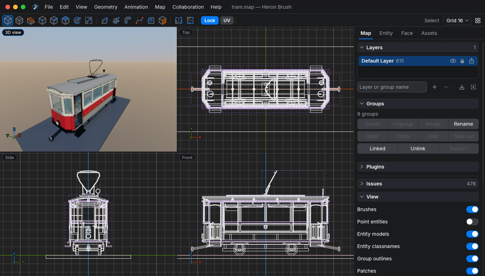
Otsikkopalkki ja valikot
Otsikkopalkissa näkyvät logo, valikot, kartan nimi keskellä ja ikkunan painikkeet. macOS:ssä tutut punainen, keltainen ja vihreä painike ovat vasemmalla. Vedä otsikkopalkkia siirtääksesi ikkunaa ja kaksoisnapsauta sitä suurentaaksesi. Kun jokin on käynnissä taustalla, palkin loppupäähän ilmestyy ilmaisin: pelimoottorin live-linkki, live-istunto tai MCP aktiivinen. Napsauta ilmaisinta pysäyttääksesi live-linkin tai avataksesi sen ikkunan.
- Tiedosto: Tervetuloa, Uusi kartta (Ctrl+N), Avaa kartta (Ctrl+O), Tallenna (Ctrl+S), Tallenna nimellä (Ctrl+Shift+S), Palauta tallennettu kartta, Vie, Renderöi kuva, Liitännäiset ja Asetukset (Ctrl+,).
- Muokkaa: Kumoa (Ctrl+Z), Tee uudelleen (Ctrl+Shift+Z), Leikkaa, Kopioi, Liitä, Monista (Ctrl+D), Poista, Valitse kaikki (Ctrl+A), Toista viimeiset komennot (Ctrl+R) ja Unohda toistettavat komennot.
- Näkymä: 3D-näkymä erillisessä ikkunassa, Siirry, Kohdista ruudukkoon (Alt+0), Näytä ruudukko (0), Esikatsele animaatioita ja Näytä pois jätetyt tahkot.
- Geometria: Lisää 3D-teksti, Yhdistä kulma, Muunna tahkot patcheiksi, Siirrä valinta pois entiteetistään ja Synkronoi linkitetyt ryhmät.
- Animaatio: Avainruutuanimaatio, Esikatsele animaatioita ja Aseta kamera 3D-näkymästä (Ctrl+Alt+0).
- Kartta: Lataa pistetiedosto, Lataa pistetiedosto uudelleen ja Poista pistetiedosto; Lataa portaalitiedosto, Lataa portaalitiedosto uudelleen ja Poista portaalitiedosto. Niillä näytetään karttakääntäjien kirjoittamat vuotojäljet ja portaalit.
- Yhteistyö: Live-istunto ja Palvele agenttia (MCP).
- Ohje: Käyttöopas ja Tietoja.
Työkalurivi
Työkalurivillä ovat kaikki työkalut. Ensimmäistä ryhmää käytetään jatkuvasti: Valitse, Brush, Leikkaus, Verteksi, Särmä, Tahko, Kierrä ja Skaalaa. Toisessa ryhmässä ovat Vinouta, Kokoa, Pyyhkäisy, Ohjauspiste, Pyöristys ja Maalaa. Pidä osoitinta painikkeen päällä nähdäksesi sen nimen ja pikanäppäimen. Aktiivisen työkalun napsauttaminen uudelleen palauttaa Valitse-työkaluun.
- Valitse Esc
Valitse kohteita ja siirrä niitä. - Brush B
Piirrä uusi brush vetämällä näkymässä. - Leikkaus C
Leikkaa brusheja tasolla, joka kulkee kahden tai kolmen pisteen kautta. - Verteksi V
Vedä brushin kulmia. - Särmä E
Vedä brushin särmiä. - Tahko F
Vedä brushin tahkoja. - Kierrä R
Kierrä valintaa kahvoilla. - Skaalaa T
Muuta valinnan kokoa kahvoilla. - Vinouta G
Vinouta valintaa kahvoilla. - Kokoa N
Kokoa kupera brush asettamistasi pisteistä. - Pyyhkäisy Y
Pursota tahkoja kaarta tai polkua pitkin. - Ohjauspiste P
Muotoile patchin ohjausruudukkoa. - Pyöristys O
Pyöristä tai viistä valitut särmät. - Maalaa K
Lisää tahkoille materiaaleja ja värejä.
Työkalujen jälkeen tulevat Peilaa vaakasuunnassa ja Peilaa pystysuunnassa ja sitten kaksi kytkintä: Lukitse säilyttää materiaalin kartoituksen, kun brush liikkuu, ja UV säilyttää sen, kun brush kääntyy (U vaihtaa sen tilaa). Niiden jälkeen tulevat aktiivisen työkalun omat asetukset: Brush-työkalu näyttää muodon ja sen valinnat, ja Pyöristys-työkalu näyttää säteen, tahkot ja kulmat sekä painikkeen Käytä. Oikeassa reunassa ovat työkalun nimi, ruudukon koko (Ruudukko 16 ja niin edelleen; napsauta valitaksesi toisen) ja valikko Ruudukon asetukset, jossa ovat Kohdista ruudukkoon, Näytä ruudukko, Esikatsele animaatioita, Näytä pois jätetyt tahkot ja Avainruutuanimaatio.
Karttanäkymät
Näkymiä on neljä: 3D-näkymä ja kolme tasonäkymää, Ylhäältä (XY), Edestä (XZ) ja Sivu (YZ). Asetukset → Näkymä → Asettelu valitsee vaihtoehdoista Yksi ruutu, Kaksi ruutua, Kolme ruutua ja Neljä ruutua. Muuta ruutujen kokoa vetämällä jakajia. Näkymän napsauttaminen antaa sille näppäimistön. Space vaihtaa ruudun, joka näyttää yhden näkymän kerrallaan, seuraavaan näkymään, ja Ctrl+Space suurentaa näppäimistön saaneen näkymän ja palauttaa taas asettelun.
Napsauta hiiren oikealla painikkeella vetämättä missä tahansa näkymässä avataksesi pikavalikon, joka koskee valintaa ja osoittimen alla olevaa kohdetta. Siinä on ryhmittely, kerrokset, linkitetyt ryhmät, entiteettien luonti, brushien siirtäminen entiteettiin tai siitä pois, materiaalin nimen kopiointi ja sen näyttäminen materiaaliselaimessa.
Tarkastin
Oikealla olevassa tarkastimessa on neljä välilehteä. Muuta sen leveyttä vetämällä vasenta reunaa.
- Kartta (Ctrl+1): Kerrokset, Ryhmät, Liitännäiset, Ongelmat, näkymäsuodattimet ja Tunnisteet.
- Entiteetti (Ctrl+2): entiteettiselain, entiteettimääritykset, valitun entiteetin ominaisuudet ja painikkeille ja laukaisimille Animaation laukaisin.
- Tahko (Ctrl+3): UV, Materiaalit, Väri, Pyyhkäisy, Pyöristys, Patch sekä Upotus ja viiste. Jokaisen osion voi taittaa kokoon.
- Resurssit: uudelleenkäytettävien brush-mallien kirjasto.
Ctrl+5 piilottaa tai näyttää tarkastimen ja Ctrl+Alt+T piilottaa tai näyttää työkalurivin, mikä antaa näkymille enemmän tilaa.
Tilapalkki ja tulosteruutu
Alareunan tilapalkki näyttää editorin viimeisimmän viestin. Virheet näytetään punaisella. Napsauta palkkia tai paina Ctrl+4 avataksesi tulosteruudun, jossa on viestien koko historia. Useimmat komennot kertovat siinä, mitä ne tekivät, esimerkiksi kuinka monta brushia leikattiin.
Ikkunat ja ulkoasu
Ikkunat kuten Asetukset, Vie ja Renderöi kuva avautuvat omina ikkunoinaan. Asetukset → Näkymä → Värimaailma valitsee vaihtoehdoista Seuraa työpöytää, Vaalea ja Tumma. Yleiskatsaus-sivun Paneelin peittävyys (%) tekee paneeleista läpikuultavia näkymien päällä. Ikkuna piirtää omat painikkeensa järjestelmäsi tyyliin: macOS:ssä natiivisti, Windowsissa Windows 11 -tyyliin ja Linuxissa GNOME-tyyliin.
Liikkuminen ja näppäimistö
Liikkuminen 3D-näkymässä
Pidä hiiren oikeaa painiketta pohjassa ja vedä katsellaksesi ympärillesi. Panoroi vetämällä keskipainikkeella. Rulla liikuttaa eteen ja taakse. W, A, S ja D lentävät eteen, vasemmalle, taakse ja oikealle, Q nousee ja X laskee; pidä Shift pohjassa ottaaksesi suurempia askeleita. Kun Alt + keskipainikkeella vetäminen liikuttaa kameraa on päällä kohdassa Asetukset → Hiiri, Alt ja keskipainike liikuttavat katselusuunnassa. Nopeudet, käänteiset suunnat ja näkökenttä ovat kohdassa Asetukset → Hiiri.
Liikkuminen 2D-näkymissä
Panoroi vetämällä keskipainikkeella ja zoomaa osoittimen ympäriltä rullalla. Kun panoroit tai zoomaat yhtä tasonäkymää, muut pysyvät linjassa; tätä ohjaa Linkitä 2D-näkymät kohdassa Asetukset → Hiiri. Ctrl+Alt+Z palauttaa zoomauksen ja Ctrl+Shift+U palauttaa tasonäkymät origoon.
Ctrl+U rajaa valinnan kaikkiin näkymiin. Näkymä → Siirry (Ctrl+Alt+M) siirtää kameran kirjoitettuihin koordinaatteihin, valitsee karttatiedoston tietyllä rivillä olevan kohteen tai siirtää valintaa kirjoitetun määrän.
Ruudukko ja kohdistus
+ ja - muuttavat ruudukon kokoa, ja numeronäppäimet 1–9 valitsevat koon suoraan, 1:stä 256 yksikköön. 0 tai # näyttää tai piilottaa ruudukon, ja Alt+0 kytkee kohdistuksen päälle tai pois. S kohdistaa valittujen brushien verteksit nykyiseen ruudukkoon, Ctrl+Shift+V kokonaisiin yksiköihin ja Ctrl+Alt+Shift+V ruudukkoon.
Yleiset pikanäppäimet
- Ctrl+S: tallenna kartta. Ctrl+Shift+S: tallenna nimellä.
- Ctrl+Z: kumoa. Ctrl+Shift+Z tai Ctrl+Y: tee uudelleen.
- Ctrl+C, Ctrl+X, Ctrl+V: kopioi, leikkaa ja liitä. Liittäminen sijoittaa objektit osoittimen kohdalle; Ctrl+Alt+V säilyttää niiden alkuperäiset koordinaatit. Kun tahkoja on valittuna, kopiointi ottaa niiden materiaalin ja UV-asetukset.
- Ctrl+D: monista. Ctrl+Shift+D: ryhmän linkitetty kaksoiskappale.
- Delete tai Backspace: poista valinta.
- Esc: peruuta nykyinen veto, palaa askel taaksepäin aktiivisessa työkalussa, palaa Valitse-työkaluun ja lopuksi tyhjennä valinta. Shift+Esc palaa suoraan Valitse-työkaluun.
- Ctrl+R: toista viimeiset toistettavat komennot. Ctrl+Shift+R: unohda ne.
- Ctrl+Alt+0 tai Ctrl+Alt+Num0: aseta renderöintikamera 3D-näkymän kohdalle.
- F5: lataa materiaalit uudelleen. F6: lataa entiteettimääritykset uudelleen.
Valinnan pikanäppäimet
- Ctrl+A: valitse kaikki, tai kaikki kahvat, kun verteksi-, särmä- tai tahkotyökalu on aktiivinen. Ctrl+Shift+A: poista valinta. Ctrl+Alt+A: käännä valinta.
- Ctrl+B: valitse muut samaan entiteettiin tai ryhmään kuuluvat objektit.
- Ctrl+T: valitse kaikki, mitä valitut brushit koskettavat. Ctrl+E: valitse kaikki niiden sisällä oleva. Ctrl+Shift+E: valitse kaikki niiden pylväässä katselusuunnan akselilla. Nämä käyttävät valitsevat brushit loppuun.
- Ctrl+I: eristä valinta. Ctrl+Alt+I: piilota se. Ctrl+Shift+I: näytä taas kaikki.
- Ctrl+G: ryhmitä. Ctrl+Shift+G: pura ryhmä.
Muunnosten pikanäppäimet
- Nuolinäppäimet sekä Page Up / Page Down siirtävät valintaa yhden ruudukon askeleen siihen suuntaan, johon ne osoittavat aktiivisessa näkymässä. Ctrl-näppäimen kanssa ne monistavat siirtäessään ja Alt-näppäimen kanssa kiertävät.
- Alt+X, Alt+Y, Alt+Z: kierrä neljänneskierros kyseisen akselin ympäri; lisää Shift toiseen suuntaan.
- Ctrl+F: peilaa näkymän poikki; Ctrl+Alt+F: peilaa ylös ja alas. Ctrl+Shift+X ja Ctrl+Shift+Y peilaavat X- tai Y-akselin suunnassa.
- Insert: sijoita piste-entiteetti valinnan keskelle.
- Tab: kun brush on valittuna, kierrä Valitse → Verteksi → Särmä → Tahko → Valitse.
Blenderin näppäinkartta
Asetukset → Näppäimistö → Näppäinkartta tarjoaa vaihtoehdot Heron Brush (oletus, jota käytetään koko tässä ohjeessa) ja Blender. Blender-kartassa G valitsee ja siirtää, R kiertää, S skaalaa, E pyyhkäisee, 1, 2 ja 3 valitsevat verteksi-, särmä- ja tahkotyökalun, K leikkaa, B valitsee, A valitsee kaiken ja Alt+A poistaa valinnan, X poistaa, Shift+D monistaa, H piilottaa ja Alt+H näyttää kaiken, ja Ctrl+Shift+Z tekee uudelleen. Kaikki muu on samaa molemmissa.
Brushit ja mallinnustyökalut
Brushit ovat tasojen määrittämiä kuperia kappaleita. Rakenna monimutkaiset objektit useista yksinkertaisista brusheista sen sijaan, että yrittäisit tehdä yhdestä brushista koveran. Pidä brushien määrä pienenä, kun yksinkertainen muoto riittää.
Brushien piirtäminen
Valitse Brush-työkalu (B) ja vedä näkymässä. Työkalurivillä näkyy Piirrettävä muoto: Suorakulmainen särmiö, Portaat, Holvikaari, Lieriö, Kartio, Pallo (UV), Pallo (ikosaedri) ja Lisää 3D-teksti. Alt+1–Alt+7 valitsevat muodon suoraan. Muodosta riippuen rivillä näkyvät Tee ontoksi ja Paksuus:, portaille Askelman korkeus: ja Suunta:, pyöreille muodoille Akseli:, Sivut: ja ympyrätila, palloille Renkaat: ja ikosaedrille Tarkkuus:. Aseta valinnat ennen vetämistä. Tarkista tulos useammasta kuin yhdestä näkymästä.
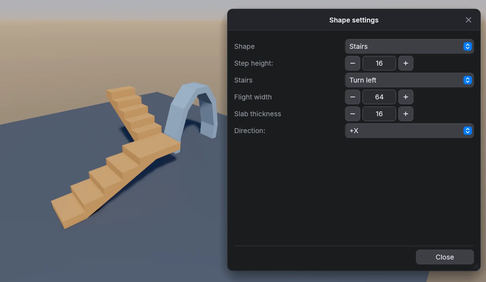
Valitseminen
Napsauta brushia valitaksesi sen ja lisää valintaan Ctrl-napsautuksella. Tyhjästä kohdasta aloitettu veto piirtää valintalaatikon. 3D-näkymässä Shift-napsautus valitsee yksittäisen tahkon ja Ctrl+Shift-napsautus lisää tahkoja. Valitun brushin vetäminen siirtää sitä; valitsemattoman vetäminen valitsee ja siirtää vain sen.
3D-näkymässä valitun brushin tahkoa Shift-vetämällä se pursotetaan. Alt-napsauta toista tahkoa kopioidaksesi siihen valitun tahkon materiaalin ja kohdistuksen; Alt+Ctrl kopioi vain materiaalin ja Alt+Shift kopioi kierron.
Muotoilutyökalut
- Valitse (Esc): valitse ja siirrä.
- Verteksi (V), Särmä (E), Tahko (F): vedä kulmia, särmiä tai tahkoja. Shift-veto särmän tai tahkon keskeltä lisää siihen kulman. Delete poistaa poimitut kulmat.
- Kierrä (R), Skaalaa (T), Vinouta (G): muunna valintaa kahvoilla.
- Leikkaus (C): napsauta kaksi tai kolme pistettä määrittääksesi leikkaustason. Enter leikkaa, Ctrl+Enter valitsee säilytettävän puolen ja Backspace tai Esc poistaa viimeisen pisteen.
- Kokoa (N): sijoita pisteitä tilavuuden ympärille ja paina Enter tehdäksesi niistä kuperan brushin. Backspace poistaa viimeisen pisteen.
- Pyyhkäisy (Y): katso alla oleva Pyyhkäisy-osio.
- Ohjauspiste (P): muotoile patchin ohjausruudukkoa.
- Pyöristys (O): napsauta särmää pyöristääksesi sen, tai poimi särmiä tai verteksejä niiden työkaluilla ja paina Enter. Useampi tahko antaa pehmeämmän tuloksen ja enemmän geometriaa.
- Maalaa (K): katso Materiaalit ja UV:t.
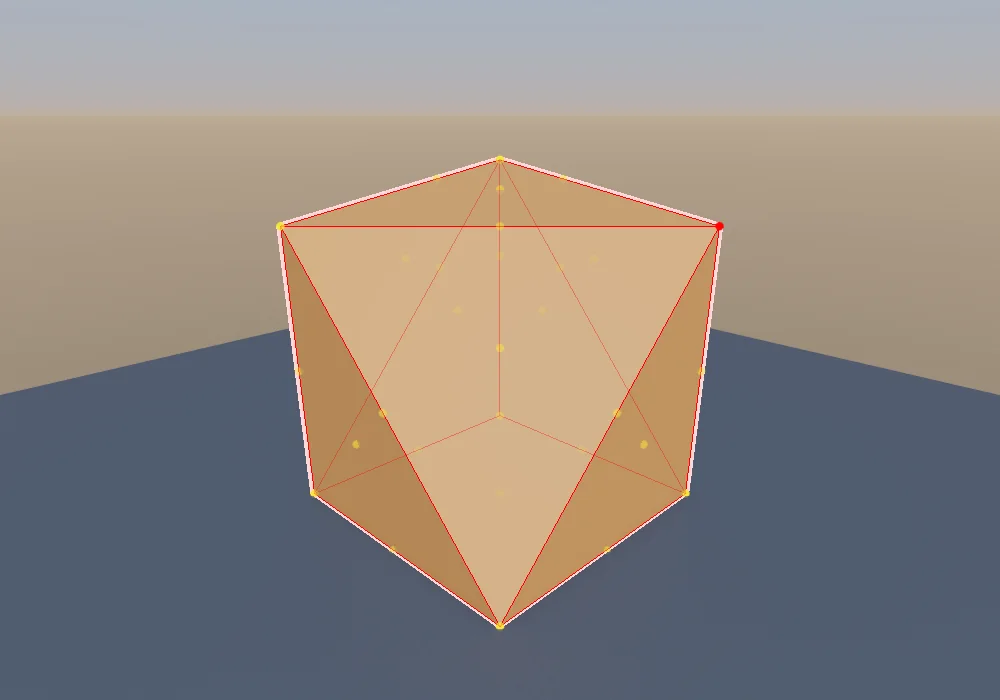
Brushien yhdistäminen
- Ctrl+J: yhdistä valitut brushit niiden kuperaksi verhoksi.
- Ctrl+K: vähennä valitut brushit niistä brusheista, joita ne koskettavat.
- Ctrl+Shift+K: tee valinnasta ontto, seinät yhden ruudukon askeleen paksuisina.
- Ctrl+L: muodosta valinnan leikkaus eli yhteinen osa.
Pyyhkäisy, pyöristys, patch ja viiste
Pyyhkäisy rakentaa geometriaa polkua pitkin valituista tahkoista. Valitse tahkot (Pyyhkäisy-työkalussa Alt-napsautuksella), aseta sitten Tahko-välilehden Pyyhkäisy-osiossa Matka, Kierto (akseli ja kulma), Skaalaa, Askelmat ja Polku (kohdistus Kokonaisluku tai Vapaa; Kaari, Suora tai S-mutka) ja paina Pyyhkäisy. Säätimien alla oleva rivi kertoo, montako brushia syntyy.
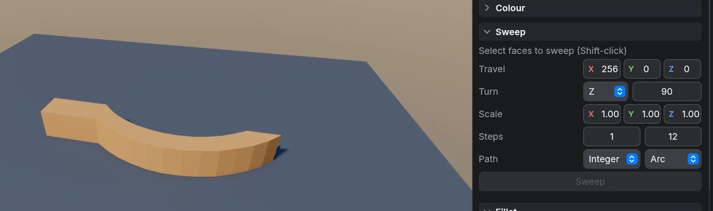
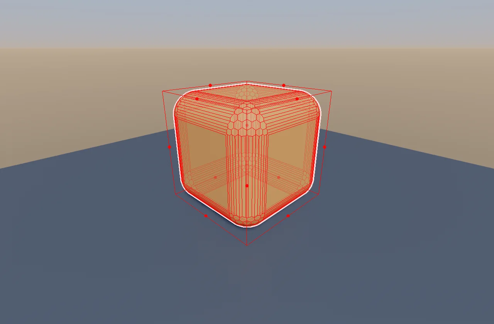
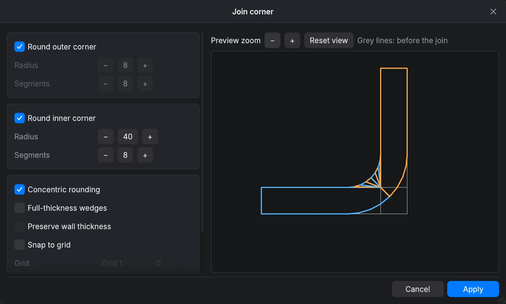
Pyöristys-osio pyöristää poimitut särmät asetuksilla Säde, Tahkot ja Kulmat (Jiiri tai Pyöristetty); yksi tahko tekee viisteen.
Patch näyttää valitun patchin Sarakkeet ja Rivit sekä painikkeet parin lisäämiseen tai poistamiseen. Geometria → Muunna tahkot patcheiksi (Ctrl+P) tekee valituista tahkoista patcheja.
Upotus ja viiste toimii valituilla tahkoilla: Upotus vetää tahkoa sisään sen reunoista ja Syvyys työntää sitä ulos (tai sisään, kun arvo on negatiivinen). Viistä tahkot tekee molemmat; kolmas painike lisää paneelin tai leikkaa syvennyksen Syvyyden etumerkin mukaan. Yhdistä kulma avaa ikkunan, joka yhdistää kaksi brushia jiiratulla tai pyöristetyllä kulmalla esikatselun kera.
3D-teksti
Geometria → Lisää 3D-teksti (myös Brush-työkalun muotoluettelon viimeinen kohta) rakentaa brusheja tekstistä. Se käyttää Heron Block -fonttia, sisäänrakennettua monikulmiofonttia, jossa on viistetyt kulmat, suhteutetut leveydet ja tšekin tarkkeet; pienet kirjaimet käyttävät isojen kirjainten muotoja. Kirjoita Teksti, aseta Korkeus (versaalikorkeus; tarkkeet nousevat sen yläpuolelle) ja Syvyys, seuraa reaaliaikaista esikatselua ja paina Lisää.
Jos toiminto ei pysty tuottamaan kelvollista geometriaa, säädä sen mittoja tai kumoa ja yksinkertaista muotoa.
Materiaalit ja UV:t
Materiaalien lataaminen ja käyttäminen
Avaa Tahko-välilehden Materiaalit-osio. Lataa kansio lisää kuvakansion ja Lataa .wad lisää tekstuuripaketin; molemmat näkyvät kohdassa Kokoelmat, jossa risti poistaa sellaisen. Kirjoita kenttään Suodata materiaaleja rajataksesi luetteloa. Napsauta materiaalia tehdäksesi siitä nykyisen, ja Käytä valintaan asettaa sen jokaiselle valitulle tahkolle. Valitse tarjoaa vaihtoehdot Valitse brushit, joissa se on ja Valitse tahkot, joissa se on. Korvaa vaihtaa materiaalin toiseen koko kartassa tai vain valinnassa.
Maalaa-työkalu (K) asettaa nykyisen materiaalin osoittimen alla olevalle tahkolle: napsautus maalaa yhden tahkon, kaksoisnapsautus maalaa koko brushin ja Shift-napsautus poimii tahkon materiaalin nykyiseksi kuin pipetti.
UV-editori
Tahko-välilehden UV-osio näyttää valitun tahkon materiaalin ja ääriviivan. Hiiren toiminnot piirtoalueella:
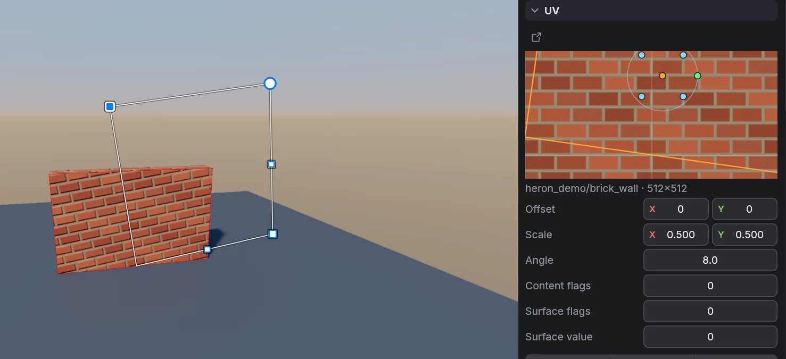
- Rulla zoomaa osoittimen ympäriltä. Panoroi vetämällä oikealla tai keskipainikkeella. Kaksoisnapsauta oikeaa painiketta rajataksesi tahkon uudelleen; toisen tahkon valitseminen rajaa sen automaattisesti.
- Vasemmalla painikkeella vetäminen siirtää materiaalia tahkon ääriviivan pysyessä paikallaan. Rengas kiertää kartoitusta, kulmakahvat skaalaavat sitä ja keskikahva asettaa näiden muutosten origon.
- Alt-vasen veto laatan reunasta vinouttaa, samoin Shift-keskiveto.
- Jokainen veto on yksi kumousaskel, ja Esc peruuttaa käynnissä olevan vedon.
Piirtoalueen alla ovat Siirtymä, Skaalaa, Kulma ja, kun peli käyttää niitä, Sisältöliput, Pintaliput ja Pinnan arvo. Painikkeet ovat Nollaa, Palauta maailmaan, Sovita, Peilaa vaaka, Peilaa pysty ja kaksi 90°:n kääntöä. Tasaa kääntää materiaalin jonkin tahkon särmän suuntaiseksi (paina uudelleen seuraavaa särmää varten, Shift edellistä varten). Neljä tasauspainiketta työntävät materiaalin särmää vasten. Sovita U ja Sovita V skaalaavat niin, että kokonainen määrä kopioita peittää tahkon; paina uudelleen seuraavaa määrää varten ja pidä Ctrl pohjassa säilyttääksesi trim sheetin jaon.
UV-näppäimet
Kun tahkoja on valittuna, nuolinäppäimet siirtävät materiaalia, [ ja ] kääntävät sitä 15°, , ja . puolittavat tai kaksinkertaistavat sen skaalan, Ctrl+F ja Ctrl+Alt+F peilaavat sen, Shift+R nollaa sen, Alt+Shift+R palauttaa sen maailman akseleihin ja Ctrl+Shift+F sovittaa sen jokaiseen tahkoon.
Työkalurivin Lukitse säilyttää kartoituksen brushien liikkuessa ja UV (U) säilyttää sen brushien kääntyessä.
Työkalumateriaalit
- skip: poistaa merkityn tahkon pelimoottorivienneistä.
- clip: luo törmäyksen ilman näkyvää geometriaa.
- origin: merkitsee brush-entiteetin kääntöpisteen.
Nimiä voi muuttaa Vie-ikkunan Työkalumateriaalit-kortissa. Käytä skipiä tahkoille, joiden tiedät olevan piilossa.
Tahkojen jättäminen pois viennistä
Valitse tahko ja kytke UV-osiossa päälle Jätä tahko pois viennistä. Oranssi viivoitus merkitsee sen UV-esikatselussa. Sen materiaali ja maalaus pysyvät tallennettuina, ja brush pysyy suljettuna ja muokattavana. Viedyistä renderöintiverkoista tahko jätetään pois, mutta törmäys säilyy. Jos kuutiosta jätetään yksi nelikulmio, syntyy kaksi renderöintikolmiota. Tämä ei tee tahkoista kaksipuolisia eikä yhdistä verkkoja.
Jätä peitetyt tahkot pois merkitsee tahkot, jotka staattiset brushit peittävät kokonaan, mukaan lukien samanlaiset toisiaan koskettavat tahkot ja suljetut brushit. Se toimii valituilla brusheilla tai, jos mitään ei ole valittuna, kaikella näkyvällä lukitsemattomalla maailmageometrialla. Brush-entiteetit, läpinäkyvät materiaalit ja brushit, joissa on jo pois jätettyjä tahkoja, ohitetaan. Osittain peitettyjä tahkoja ei jaeta. Yksi kumous palauttaa kaiken. Näkymä → Näytä pois jätetyt tahkot piilottaa tai näyttää tällaiset tahkot editorin näkymissä; poiminta käyttää silti koko brushia.
Värit ja liukuvärit
Tahko-välilehden Väri-osio maalaa tahkoja tasaisilla väreillä tai liukuväreillä niiden materiaalien päälle. Se on hyödyllinen kentän hahmotteluun ja tyyliteltyyn grafiikkaan. Maalatut tahkot näkyvät näkymissä oikeissa väreissään; valinta näytetään ääriviivalla.
Paletti ja sekoitusväri
Napsauta yhtä kahdestatoista paletin värinäytteestä maalataksesi sillä valitut tahkot tai kokonaiset valitut brushit. Peittävyys asettaa seuraavan maalauksen peittävyyden prosentteina. Sekoitus-kohdassa on väripainike, joka avaa värinvalitsimen; vedä valitsimessa, niin valinta seuraa reaaliajassa, tai paina Maalaa käyttääksesi sekoitusväriä yhtenä askeleena. Takaisin materiaaliin poistaa maalauksen, jolloin tahko näyttää taas materiaalinsa. Osion yläreunan rivi kertoo, mitä on valittuna ja mitä sillä on päällään.
Värinvalitsin
Jokainen editorin väripainike avaa saman valitsimen. Vedä neliössä valitaksesi kylläisyyden ja kirkkauden ja sen vieressä olevassa palkissa valitaksesi sävyn. Alla ovat arvot R, G ja B sekä Peittävyys-liukusäädin, jos värillä on sellainen. Heksakenttään kirjoitetaan #RRGGBB tai #RRGGBBAA; se muuttuu punaiseksi, kun teksti ei ole kelvollinen väri. Kopioi vie heksakoodin leikepöydälle. Sulje valitsin napsauttamalla sen ulkopuolelle.
Liukuvärit
Liukuväri valitsee vaihtoehdoista Lineaarinen liukuväri ja Säteittäinen liukuväri, ja sen vieressä oleva painike vaihtaa värien päät keskenään. Jokaisella värikohdalla on väripainike ja Sijainti (%), ja päiden välissä olevilla kohdilla on poistopainike. Lisää värikohta lisää kohdan leveimpään väliin; liukuvärissä voi olla enintään kahdeksan värikohtaa. Liukuvärin kulma asettaa lineaarisen liukuvärin suunnan, ja sitä varten on painikkeet +45° ja −45°.
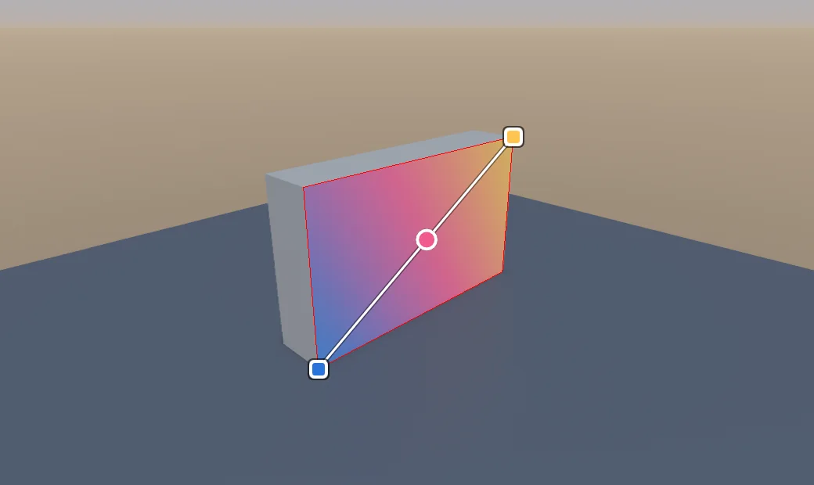
Esikatselun alla on kisko, jossa on merkki jokaiselle värikohdalle. Napsauta kiskoa lisätäksesi kohdan, napsauta merkkiä avataksesi sen valitsimen, vedä merkkiä siirtääksesi sitä ja napsauta merkkiä hiiren oikealla painikkeella poistaaksesi sen. Kiskon alla olevat kolme värinäytettä ovat esiasetuksia: Lämmin liukuväri, Viileä liukuväri ja Harmaasävyliukuväri. Liukuvärin muutokset koskevat valintaa reaaliajassa.
Liukuvärin suunnalla on väliä: suuntaa se katon kaltevuuden tai kaarevan objektin mukaan, älä toisiinsa liittymättömien tahkojen poikki. Tarkista malli maalauksen jälkeen molemmilta puolilta.
Pinnan materiaali
Pinnan materiaali asettaa Karheus (0 on kiiltävä, 100 on matta), Metallisuus (0 puulle, kivelle tai muoville, 100 metallille) ja Emissio (0–8; pinta hehkuu omalla värillään liukuvärit mukaan lukien, mutta ei valaise lähellä olevia objekteja). Muutokset koskevat valittuja tahkoja tai brusheja reaaliajassa. Käytä oletuspintaa poistaa ohituksen. Kaikki muutokset voi kumota.
Pintatehosteet näkyvät valaistussa 3D-näkymässä ja kamerarenderöinneissä. Tasainen näyttö ja rautalankanäyttö jättävät kiiltokohdat tarkoituksella pois. Hehku voi lisätä loisteen emissiivisten pintojen ympärille. Godot ja glTF/GLB saavat materiaaliarvot, ja Unityn tuoja muuntaa karheuden sileydeksi. Katso kunkin kohteen rajoitukset tiedostosta docs/surface-materials.md.
Resurssit, kerrokset ja ryhmät
Resurssikirjasto
Avaa Resurssit-välilehti. Lisää .map-mallien kansio painikkeella Lisää kansio; sisäänrakennettu kirjasto on aina mukana. Hae kirjoittamalla kenttään Suodata resursseja. Napsauta mallia valitaksesi sen, ja kaksoisnapsauta sitä, paina Enter tai napsauta Lisää lisätäksesi sen kohtaan, jossa osoitin viimeksi oli. Voit myös vetää mallin näkymään. Resurssin brushit lisätään yhtenä ryhmänä, joten malli liikkuu kokonaisuutena.
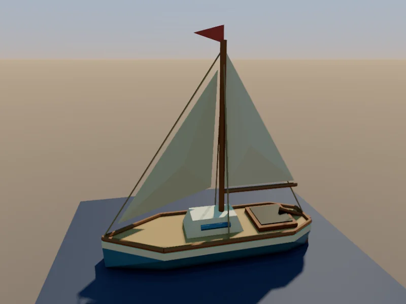
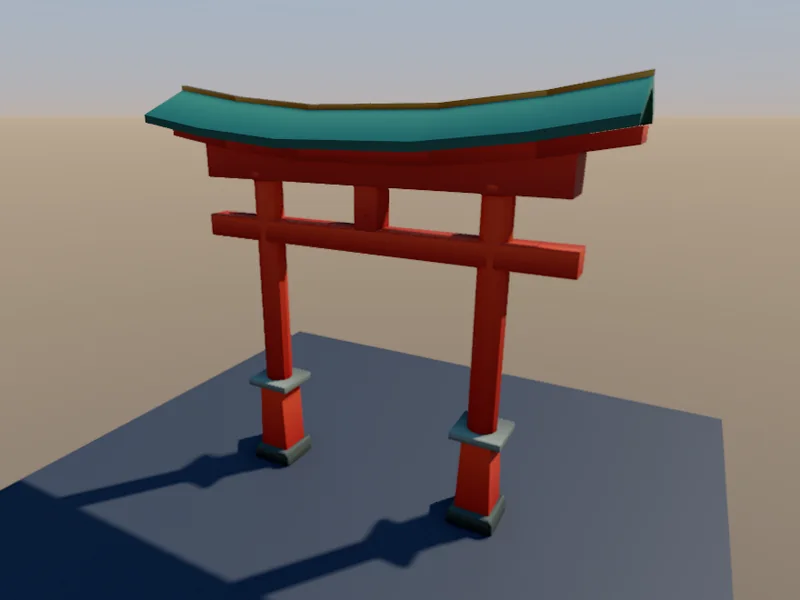
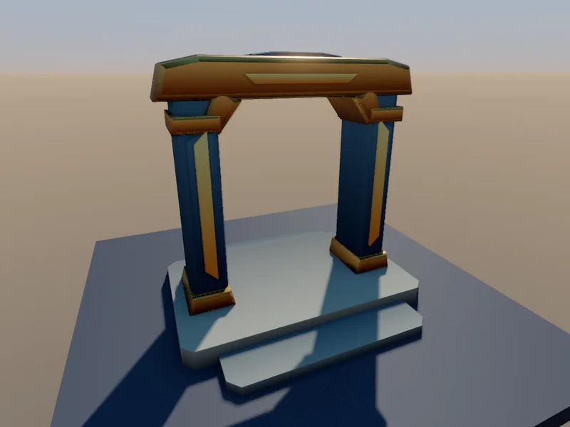
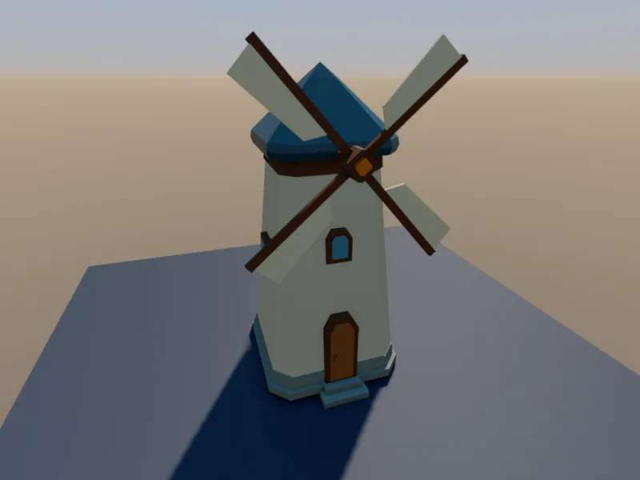
Tallenna valinta resurssiksi kirjoittaa valitut brushit kirjastoon .map-tiedostona. Kirjaston resurssit ovat tavallisia muokattavia brusheja, eivät tuotuja verkkoja.
Kerrokset
Kartta-välilehden Kerrokset-luettelo jäsentää suuria alueita. Kirjoita nimi ja napsauta Lisää luodaksesi kerroksen, tai paina Enter nimetäksesi nykyisen uudelleen. Jokaisen kerroksen voi piilottaa, lukita tai jättää pois vienneistä. Siirrä tähän siirtää valinnan nykyiseen kerrokseen. Näkymien pikavalikossa ovat myös Siirrä kerrokseen, Tee aktiiviseksi kerrokseksi, Piilota kerrokset ja Eristä kerrokset.
Ryhmät ja linkitetyt ryhmät
Ctrl+G ryhmittää valinnan ja Ctrl+Shift+G purkaa ryhmän. Kartta-välilehden Ryhmät-osio luettelee ryhmät ja tarjoaa toiminnot Avaa, Nimeä uudelleen, Yhdistä, Pura ryhmä, Ota pois ja Pura. Linkitetty ryhmä on joukko kopioita, jotka jakavat muokkaukset: Ctrl+Shift+D tekee linkitetyn kaksoiskappaleen, Geometria → Synkronoi linkitetyt ryhmät päivittää kopiot ja Pura linkitys tekee kopiosta itsenäisen. Entiteetti-välilehdellä ominaisuuden voi pitää yhden kopion omana, kun linkitetyt ryhmät synkronoidaan.
Yhteinen mittakaava
Oletusarvoinen vientimittakaava on 32 kartan yksikköä metriä kohden. Sisäänrakennettu pelaajan aloituspisteen merkki on 64 yksikköä korkea, 2 metrin vertailukohta. Vertaa oviaukkoja, ajoneuvoja, huonekaluja ja kasveja siihen. Muuta vientimittakaavaa vain tarkoituksella ja pidä toisiinsa liittyvät resurssit yhdenmukaisina.
Entiteetit ja pelattavuus
Yleiset entiteettimääritykset ovat sisäänrakennettuja ja aina käytettävissä: valot, pelaajan aloituspisteet, ovet, painikkeet, tasot, laukaisimet, staattiset rekvisiitat, äänet ja reittipisteet. Projektin FGD-tiedoston lataaminen Entiteetti-välilehden kohdassa Entiteettimääritykset korvaa samannimiset luokat ja säilyttää muut sisäänrakennetut.
Entiteettien sijoittaminen
Kirjoita Entiteetti-välilehden Entiteetit-selaimessa kenttään Suodata luokkia ja valitse luokka. Pisteluokalle, kuten valolle, napsauta Aseta tai kaksoisnapsauta luokkaa; Insert sijoittaa sellaisen valinnan keskelle. Brush-luokalle, kuten ovelle tai laukaisimelle, valitse brushit ja napsauta Luo. Luokkia voi myös vetää näkymään.
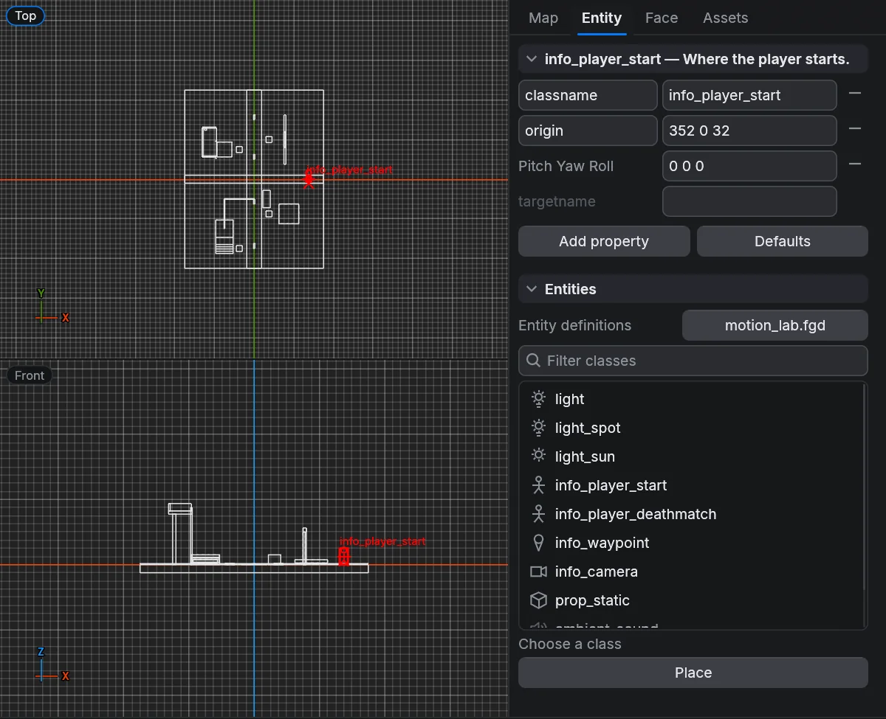
Ominaisuudet
Ominaisuusluettelo muokkaa valittua entiteettiä. Saman luokan entiteettejä muokataan yhdessä. Lisää ominaisuus lisää avaimen, jota määritys ei ehkä tunne; Oletukset voi palauttaa olemassa olevat ominaisuudet oletusarvoihinsa tai lisätä puuttuvat. Ominaisuudet, jotka luokka määrittää mutta joita entiteetillä ei ole, näytetään himmennettyinä; arvon kirjoittaminen lisää ne. Linkitä entiteettejä ominaisuuksilla targetname ja target.
Mitä vienti voi tehdä
Godotin direktiivit luovat natiiveja solmuja, törmäyskappaleita ja laukaisualueita. Unity ja Unreal tukevat natiiveja yleisiä valoja, ja Unreal luo myös PlayerStart-aktoreita. Muut tiedot säilytetään niin pitkälle kuin kohteen tuoja sallii.
Pelkkä oven entiteetti ei lisää pelikäyttäytymistä. Liike, laukaisimien reaktiot, pelaajaohjaimet ja projektin skriptit vaativat yhä työtä pelimoottorissa. Defold vie entiteettien ominaisuudet ja törmäysobjektit; Flax sijoittaa mallit ja yleiset entiteetit. Tarkista tulos pelimoottorissasi ennen kuin rakennat pelattavuutta sen päälle.
Animaatio
Heron Brush voi esikatsella yksinkertaista liikettä ja muokata brush-entiteettien avainruutuanimaatioita sekä viedä ne useisiin pelimoottoreihin.
Animaatioiden esikatselu
Kytke Esikatsele animaatioita päälle Näkymä-valikossa, Animaatio-valikossa, Ruudukon asetukset -valikossa tai Kartta-välilehden Näkymä-osiossa. Se toistaa func_rotate-kierron ja func_shuttle-edestakaisen liikkeen, kun start_on on käytössä, käyttäen entiteetin akseli-, nopeus-, suunta-, matka- ja odotusominaisuuksia, ja se toistaa avainruutuklipit, joille on asetettu toisto käynnistettäessä. Tuuletin- ja tuulimyllyresursseissa on jo valmiiksi pyöriviä osia.
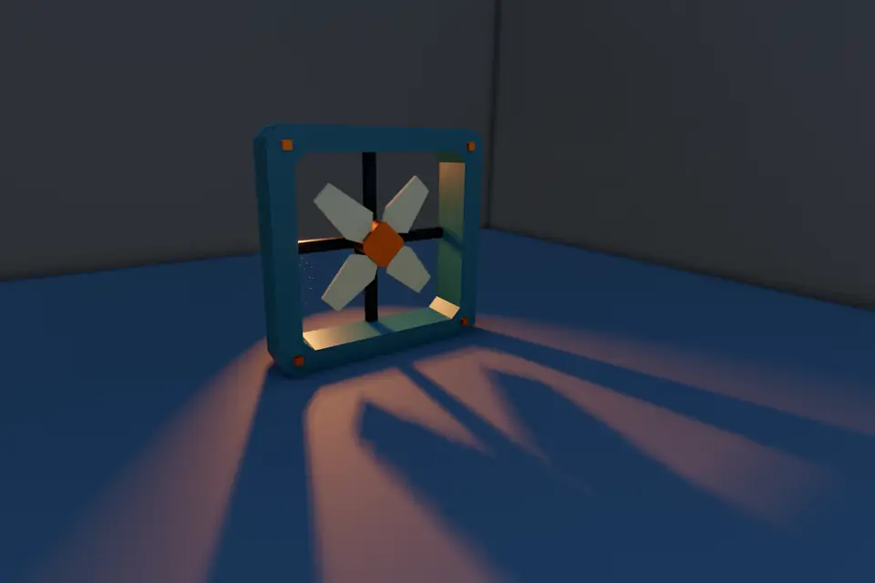
Esikatselun kytkeminen pois palauttaa alkuperäisen asennon. Napsautus näkymässä pysäyttää toiston ennen valitsemista tai muokkaamista; kameran liikuttaminen toimii edelleen. Esikatselu ei muuta karttaa, kumoushistoriaa eikä vientejä, eikä se suorita fysiikkaa tai pelilogiikkaa.
Avainruutueditori
Avaa se valikosta Animaatio → Avainruutuanimaatio tai Ruudukon asetukset -valikosta. Se telakoituu näkymien alle tai 3D-ikkunaan, kun se on erillään. Otsikossa oleva ikkunakuvake siirtää sen omaan ikkunaansa; ruutu ja kumoushistoria säilyvät. Muokkaa animaatiota vaihtaa näkymät animoituun asentoon ja Muokkaa karttaa palaa lepogeometriaan. Animaatiotilassa jokaisen näkymän alareunassa näkyvät Muokkaa animaatiota ja ruudun numero.
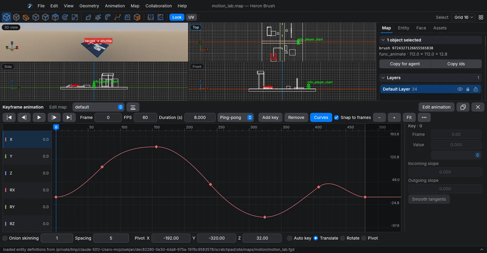
Valitse brush-entiteetti tai brush tai brush-ryhmä animoidaksesi sen. Litteä brush-ryhmä jakaa yhden animaation ja kääntöpisteen; ryhmät, joissa on useita entiteettejä, tarvitsevat erilliset animaatiot.
Klipit
Animaatio-valitsin vaihtaa nimettyjen klippien välillä. Kirjoita nimi kenttään Animaation nimi ja napsauta Tallenna nimellä kopioidaksesi nykyisen klipin sillä nimellä; Poista poistaa klipin. Siirrä luo translate-klipin ilman kiertoa. Oven animaatiot luo pehmeät open- ja close-klipit, joissa on 90 asteen kääntö nykyisen kääntöpisteen ympäri; siirrä kääntöpiste ensin saranan kohdalle. Toista käynnistettäessä saa klipin toistumaan, kun kenttä alkaa; oviesiasetus kytkee sen pois.
Siirtymäpainikkeet ja toisto
Siirtymäpainikkeet ovat Alku, Edellinen avain, Toisto, Seuraava avain ja Loppu. Ruutu näyttää ja asettaa nykyisen ruudun, ja Kesto (s) asettaa klipin pituuden. Tila on Kerran, Silmukka tai Edestakainen.
Aikajana
Aikajanalla on viivain toistokohtineen sekä kaista kohteelle Sijainti (X, Y ja Z avainnetaan yhdessä) ja jokaiselle kiertokulmalle RX, RY ja RZ. Napsauta tai vedä viivaimessa siirtääksesi toistokohtaa ja esikatsellaksesi kyseistä asentoa kaikissa näkymissä. Panoroi aikajanaa vetämällä keskipainikkeella. Vedä avaimia siirtääksesi niitä ajassa; Shift lisää valintaan; kaksoisnapsauta kaistaa lisätäksesi avaimen; Ctrl+rulla zoomaa. Käyrät näyttää arvokäyrät kaistojen sijaan.
Sen yläpuolella olevat painikkeet ovat Lisää avain, Poista, Kopioi, Liitä ja Monista. Kohdista ruutuihin pitää avaimet kokonaisissa ruuduissa ja Sovita näyttää koko klipin. Ajoita avaimet uudelleen avaa kohdat Aikaskaala, Siirtymä (ruutua), Skaalaa toistokohdasta, Pidennä kestoa ja Ajoita valinta uudelleen.
Aikajanan vieressä oleva avaintarkastin muokkaa valittua avainta: Ruutu, Arvo (tai Sijainti-avaimen kolme koordinaattia), interpolointi Lineaarinen, Vakio tai Bezier, Saapuva kulmakerroin ja Lähtevä kulmakerroin sekä Pehmeät tangentit.
Editorin näppäimet
Kun aikajanalla on näppäimistö: Space toistaa tai keskeyttää, vasen ja oikea nuoli siirtävät yhden ruudun, Ctrl+A valitsee kaikki avaimet, Ctrl+C, Ctrl+X ja Ctrl+V kopioivat, leikkaavat ja liittävät avaimia, Ctrl+D monistaa ne, Delete poistaa ne, Ctrl+Z kumoaa ja Esc peruuttaa vedon. Aikajanan ulkopuolella Esc poistuu animaatiotilasta. Kumoaminen jättää zoomauksen, valinnan ja toistokohdan ennalleen.
Asennon muokkaaminen näkymissä
Aikajanan alla olevalla rivillä ovat Sipulinahka määrineen ja Väli, jotka näyttävät lähellä olevat asennot haamuina; Kääntöpiste-koordinaatit; Automaattiavain; sekä asentotyökalut Siirrä, Kierrä ja Kääntöpiste.
- Lisää avain kytkee Automaattiavaimen päälle ja keskeyttää toiston. Kun Automaattiavain on päällä ja Siirrä on valittuna, vedä valitun entiteetin kahvan värillistä akselia 3D-näkymässä avainnetaksesi sen sijainnin nykyisessä ruudussa.
- 2D-näkymässä vedä valittua brushia tai sen ryhmän jäsentä avainnetaksesi siirron kahden näkyvän akselin suunnassa ruudukkoon kohdistaen. Automaattiavaimen ei tarvitse olla tätä varten päällä.
- Kierrä-työkalulla vedä brushia 2D-näkymässä sen oranssin kääntöpistemerkin ympäri. Ylhäältä-näkymä avainnetaa RZ:n, Edestä-näkymä RY:n ja Sivu-näkymä RX:n, ruudukon kulmiin kohdistettuina.
- Kääntöpiste-työkalulla vedä keltaista kiertokeskipistettä missä tahansa 2D-näkymässä. Se kohdistuu ruudukkoon ja säilyttää syvyytensä. Avaimet ja lepogeometria pysyvät ennallaan.
Syaani polku 2D- ja 3D-näkymissä näyttää kääntöpisteen kulkureitin. Napsauta polun pistettä valitaksesi sen ajan ja avaimet tai vedä sitä muuttaaksesi sijaintia; kun Automaattiavain on päällä, voit vetää polun pisteitä myös 3D-näkymässä. Tunnisteet näyttävät ruutujen numerot ja katkoviivaiset osuudet merkitsevät hyppyjä. Esc peruuttaa minkä tahansa näistä vedoista, ja yksi kumous peruu koko vedon.
Uudet animaatiot alkavat lepoasennosta avaimin ajassa nolla. Luo liikettä muuttamalla asentoa toisessa ruudussa. Terävää L-muotoista polkua varten avainna alku, kulma ja loppu ja käytä Lineaarista interpolointia Edestakaisen tilan kanssa.
Painikkeiden yhdistäminen animaatioihin
Valitse func_button, trigger_multiple tai trigger_once. Entiteetti-välilehdellä näkyy ominaisuuksien yläpuolella Animaation laukaisin. Valitse kohde luettelosta tai napsauta Valitse kohde ja sitten animoitua objektia missä tahansa näkymässä; Esc peruuttaa valitsemisen. Puuttuvista kohteista tai klipeistä ilmoitetaan säätimien alla. Entiteettilinkit näyttävät nuolet kohteisiinsa, kun linkkien näyttäminen on päällä.
Toiminto valitsee, mitä aktivointi tekee: Toista käynnistää nimetyn klipin tai valitun animaation; Vaihda vuorottelee klippejä open ja close, jos ne ovat olemassa, ja muuten käynnistää valitun animaation alusta; Avaa ja Sulje käynnistävät nuo klipit; Tauko pitää asennon, Jatka jatkaa ja Pysäytä palauttaa alkuperäisen asennon. Vain kerran ohittaa luokan oletuksen. Toistoviive (s) asettaa lyhimmän ajan aktivointien välillä; se ei viivästä ensimmäistä.
Kokeile laukaisinta suorittaa toiminnon esikatselussa muokkaamatta karttaa tai lisäämättä kumousaskelia. Nollaa esikatselu palauttaa alkuperäiset asennot ja tyhjentää kerran- ja jäähdytystilan. Tämä ei simuloi pelaajan törmäyksiä eikä peliskriptejä.
Animaatio vienneissä
Godot vie natiivit AnimationPlayer- ja AnimationLibrary-resurssit käyrineen ja liikkuvine törmäyksineen. Painikkeen alueelle tuleva CharacterBody3D aktivoi sen kohteen. Godotissa näihin klippeihin tehdyt muutokset eivät palaa karttaan, ja seuraava vienti korvaa ne.
Raylib-vienti lisää tiedoston <map>_animation.h, jossa on C-kielinen toistin, ja tiedoston <map>_preview.c, jossa on vapaan kameran esikatselu; rakenna se ohjeen <map>_raylib.md mukaan. Esikatselussa SPACE keskeyttää, R käynnistää oletusklipit alusta ja N käy läpi nimetyt klipit. Defold upottaa toiston entiteetin skriptiin dokumentoiduilla heron_*_animation-viesteillä. Unityn Build Level lisää komponentin HeronBrushAnimation ja kinemaattisen kappaleen. Bevy-vienti sisältää tiedoston heron_animation.rs ja ohjeet. Godot, Unity, Defold, Bevy ja raylib säilyttävät laukaisinlinkit, kerran-lipun ja toistoviiveen. Pelisi täytyy silti rekisteröidä pelaaja ja yhdistää omat painikkeensa kunkin ajoympäristön API:in.
Motion lab -esimerkki
Avaa motion_lab aloitusnäkymän esimerkeistä. Siinä on L-polkua kulkeva taso, hissi, pyörivä taso ja saranoitu ovi painikkeineen. Avaa sen vieressä oleva godot/project.godot Godotissa ja paina F5. WASD ja hiiri liikuttavat pelaajaa, välilyönti hyppää, 1–4 vierailevat asemilla ja R aloittaa nykyisen aseman alusta. Astu värilliselle alustalle aktivoidaksesi sen kohteen. Mukana oleva README selittää uudelleenviennin.
Vienti pelimoottoriin
Tiedosto → Vie avaa Vie-ikkunan. Pelimoottorit on lueteltu vasemmalla logoineen: Godot, Defold, three.js, Bevy, raylib, Unity, Unreal Engine, Flax Engine, Cocos Creator, Wavefront .obj, glTF .gltf, GLB .glb ja viimeisenä .map. Oikealla oleva sivu kertoo, mitä kohde saa. Kirjoita kirjoittaa sen, Tarkista rakentaa kentän kirjoittamatta sitä ja luettelee ongelmat, ja Sulje sulkee ikkunan.
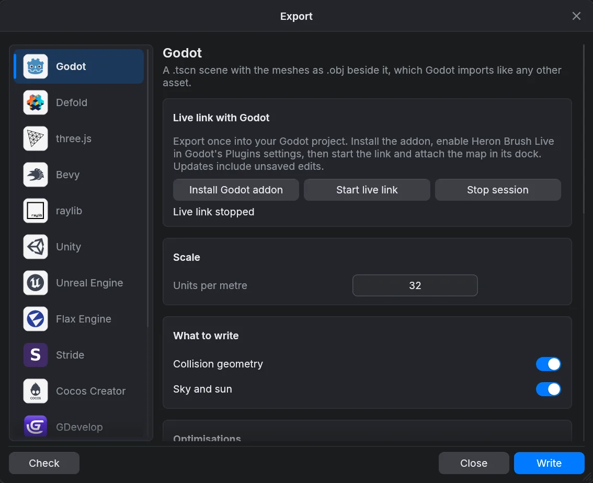
Vienti on erillään tallentamisesta: .map pysyy muokattavana lähteenäsi. Jokainen säädin tallentaa pelimoottorinsa asetukset heti muuttuessaan, joten kukin pelimoottori säilyttää omat vastauksensa ja ikkuna avautuu sellaisena kuin sen jätit.
Yleiset valinnat
- Skaalaa: Yksikköä metriä kohden, oletuksena 32.
- Mitä kirjoitetaan: Törmäysgeometria.
- Optimoinnit: Ryhmitä staattiset verkot 1024 yksikön soluihin, Poista geometrian sisään hautautuneet tahkot, Yhdistä samassa tasossa olevat tahkot ja Yhdistä törmäysmuodot.
- Projektin polut: minne kenttä ja sen resurssit menevät projektin sisällä.
- Työkalumateriaalit: clip-, skip- ja origin-materiaalien nimet.
- Enemmän: pelimoottorikohtaiset kytkimet, kuten Solmujen nimeämisperuste, Rakenna kerrokset ja ryhmät uudelleen yläsolmuiksi, Käännä kolmioiden kiertosuunta, tekstuurikoordinaattien peilaus ja toinen UV-joukko leivottua valoa varten asetuksella Valokartan tekseli.
- Pysytään kartan tahdissa: Kirjoita uudelleen aina, kun kartta tallennetaan. Se tulee käyttöön, kun pelimoottoriin on viety kerran, koska tuo vienti kertoo, minne kirjoitetaan.
Staattiset solut jakavat maailman brushit niiden keskipisteiden mukaan ja yhdistävät ne materiaaleittain kunkin 1024 yksikön solun sisällä, jotta pelimoottorit voivat karsia kartan pienempiä osia. Törmäys säilyy ja pelattavuuden entiteetit pysyvät erillään. Tämä voi tarkoittaa enemmän piirtokutsuja kuin yksi maailmaverkko, joten se on oletuksena pois päältä. Erilliset OBJ-, glTF- ja GLB-viennit eivät käytä soluja.
Huomioita kohteista
- Godot: tekstuurien ja materiaalien
res://-polut, laukaisimien fysiikkakerros ja valokartan UV2. Valitse vientikansio Godot-projektin sisältä. - Defold: resurssien hakemisto, mallin materiaali ja tekstuurin näytteistin, jonka on oltava valitussa materiaalissa.
- Unity: OBJ-verkot ja editorin tuoja; vie projektin Assets-kansion alle.
- Unreal Engine: luotu tuontiskripti ja sisältöpolku, tavallisesti /Game/
. - Flax Engine: mallin sisältöpolku suhteessa projektin Content-kansioon.
- three.js, Bevy, raylib ja Cocos Creator: näkymiä tai koodia näille ajoympäristöille, ohjeet viennin vieressä.
- glTF / GLB: siirrettävää geometriaa yhteensopiville työkaluille; GLB on binäärimuoto. OBJ: geometriaa ja materiaaleja mallinnustyökaluille.
.map: Kirjoitusmuoto valitsee vaihtoehdoista Valve 220, Vakio, Quake 2 ja Quake 2 (Valve). Ikkuna kertoo, mitä valittu murre menettäisi.
Lue kirjoittamisen jälkeen varoitukset, kuten puuttuvat tekstuurit. Mitä tarkistus löysi luettelee ne ikkunassa.
Live-linkit: Godot, Unity, Defold ja Flax
Live-linkki lähettää tallentamattomat muokkaukset Heron Brushista pelimoottorin editoriin työskennellessäsi. Se on yksisuuntainen: pelimoottorissa tehdyt muokkaukset eivät palaa takaisin. Kussakin karttaikkunassa voi olla käynnissä yksi live-linkki. Pysäytä se ennen kuin vaihdat pelimoottoria, ja käynnistä se uudelleen ottaaksesi muutetut vientiasetukset käyttöön. Säätimet ovat Vie-ikkunassa pelimoottorin sivulla, kortissa Live-linkki: ….
Otsikkopalkin ilmaisin näyttää linkin tilan; napsauta sitä pysäyttääksesi linkin. Kartan sulkeminen tai korvaaminen lopettaa julkaisemisen. Jos tuonti epäonnistuu, korjaa ongelma ja käynnistä linkki uudelleen.
Godot
- Vie kerran Godot-projektiin.
- Napsauta Asenna Godot-lisäosa.
- Ota Heron Brush Live käyttöön Godotin kohdassa Project Settings → Plugins.
- Napsauta Käynnistä live-linkki ja liitä kartta Godotin telakasta avoinna olevaan 3D-näkymään.
Lisäosa korvaa vain luomansa haaran ja säilyttää liitoksen sijoittelun ja muut solmut. Tallenna Godot-näkymä itse, ja pidä omat skriptisi ja solmusi luodun haaran ulkopuolella.
Unity
- Vie kerran Unity-projektin Assets-kansion alle.
- Napsauta Asenna Unity-lisäosa ja anna Unityn kääntää se.
- Avaa Unityssä Window → Heron Brush → Live Link.
- Käynnistä linkki ja liitä kartta aktiiviseen Unity-näkymään.
Pidä Unityn live-ikkuna auki. Päivitykset pysähtyvät Play Modessa ja Prefab Modessa. Vain karttaobjektin Generated-lapsi korvataan. Älä muokkaa luotuja tiedostoja.
Defold
- Vie kerran Defold-projektiisi ja pidä projekti auki Defoldissa.
- Napsauta Käynnistä live-linkki. Lisäosaa ei tarvita.
- Avaa Defoldissa heron_brush_live/preview.collection tai viittaa siihen omasta näkymästäsi.
Linkki kirjoittaa erilliseen luotuun kansioon eikä koske lopulliseen vientiin tai game.project-tiedostoon. Pikalataa käynnissä oleva peli päivittää myös Defoldista käynnistetyn pelin; objektien lisääminen tai törmäyksen muuttaminen voi vaatia kentän käynnistämistä uudelleen. Epäonnistuneita yhteyksiä yritetään automaattisesti uudelleen.
Flax
Vie projektin Content-kansioon ja napsauta Asenna Flax-lisäosa. Anna Flaxin kääntää se, käynnistä linkki ja valitse sitten avoimessa Flax-näkymässä Tools → Heron Brush: attach live map. Luotu juuri säilyttää sijoittelunsa, eikä muihin objekteihin kosketa. Tallenna näkymä itse. Päivitykset pysähtyvät Play Modessa. Tools → Heron Brush: stop live map keskeyttää vastaanoton.
Yhteiset live-istunnot
Yhteistyö → Live-istunto avaa ikkunan istunnon isännöimiseen tai toisen Heron Brush -käyttäjän istuntoon liittymiseen. Se jakaa kartan muokkaamisen ihmisten kesken; se on eri asia kuin pelimoottorin live-linkki.
Isännöinti ja liittyminen
Kirjoita Nimesi. Isännöidäksesi valitse Isännöi istuntoa, napsauta Käynnistä istunto ja lähetä vierasillesi tiedot, jotka saat painikkeella Kopioi yhteystiedot. Liittyäksesi valitse Liity istuntoon, liitä tiedot ja napsauta Yhdistä. Liittyminen korvaa avoimen kartan isännän kartalla, joten tallenna työsi ensin.
Vakiokäännös toimii lähiverkossa, ja Lähiverkon portti asettaa portin. Istunnot internetin yli (Yhdistä internetin kautta) vaativat käännöksen, jossa on valinnainen verkko-ominaisuus. Osallistujat näkevät toistensa kameramerkit ja nimet 3D-näkymässä.
Ikkunan sulkeminen pitää istunnon käynnissä; otsikkopalkin ilmaisin näyttää sen tilan. Pysäytä istunto tai Poistu istunnosta lopettaa sen. Kun kaksi ihmistä muokkaa samaa objektia, isännän järjestys ratkaisee lopullisen version, ja kumoaminenkin on yhteinen muokkaus. Työskennelkää mahdollisuuksien mukaan eri alueilla ja tallentakaa välitallennuksia.
3D-näyttö ja toinen näyttö
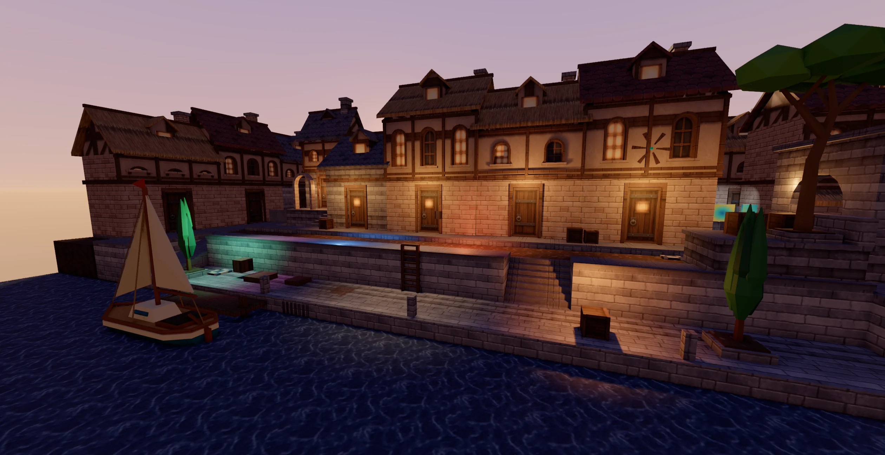
Näyttötilat
Kartta-välilehden Näkymä-osio vaihtaa, mitä näkymät piirtävät: Brushit, Piste-entiteetit, Entiteettien mallit, Entiteettien luokkanimet, Ryhmien ääriviivat, Patchit, Materiaalit, Näytä pois jätetyt tahkot, Esikatsele animaatioita, Rautalanka, Särmät ja Brush-entiteettien ääriviivat. Rautalanka piirtää kolmioiden särmät, myös lävistäjät ja pintojen takana olevat särmät, ilman materiaaleja. Se on väliaikainen vianetsintänäkymä eikä vaikuta vienteihin tai renderöinteihin.
3D-näkymän valaistus, varjot, ympäristön peittävyys, heijastukset, hehku ja pehmennys ovat kohdassa Asetukset → Renderöijä. Nämä ovat esikatseluasetuksia; lopulliset kuvat käyttävät renderöintikameran omia asetuksia.
Erillinen 3D-ikkuna
Näkymä → 3D-näkymä erillisessä ikkunassa siirtää 3D-näkymän omaan ikkunaansa, jonka voit sijoittaa toiselle näytölle. Se jakaa kameran, dokumentin ja työkalut, ja tasonäkymät täyttävät pääikkunan tilan. Sen valikossa ovat Materiaalit, Kiinteä näkymä ja Rautalanka; Näkymä-alivalikko, jossa ovat Näytä pois jätetyt tahkot, Esikatsele animaatioita, Särmät, Ryhmien ääriviivat, Piste-entiteetit, Entiteettien mallit ja Brush-entiteettien ääriviivat; Kohdista valintaan; Edestä, Sivu ja Ylhäältä, jotka kääntävät kameran valinnan (tai kameran edessä olevan pisteen) ympäri; Aseta kamera 3D-näkymästä; Koko näyttö (F11); Renderöi kuva; ja Palaa pääikkunaan. Ikkunan sulkeminen telakoi näkymän takaisin.
Proseduraalinen taivas
Proseduraalinen taivas on 3D-näkymässä oletuksena päällä, ja sen voi kytkeä pois kohdassa Asetukset → Renderöijä → Valo. Renderöintikameroilla on oma Proseduraalinen taivas -kytkimensä, joka tallennetaan kartan mukana. Taivaan, horisontin ja maan värit tulevat ympäristöasetuksista, ja aurinko seuraa näkymän valaistusta. Taivaalla ei ole geometriaa, eikä sitä viedä.
Renderöintikamerat ja PNG-kuvat
Tiedosto → Renderöi kuva avaa renderöintiikkunan: kamera ja sen asetukset vasemmalla ja oikealla reaaliaikainen esikatselu, joka piirtyy uudelleen niitä muuttaessasi. Kamerat tallennetaan .map-tiedostoon vain editorin käyttämälle renderöintikameroiden kerrokselle, joka jätetään pois pelimoottorivienneistä.
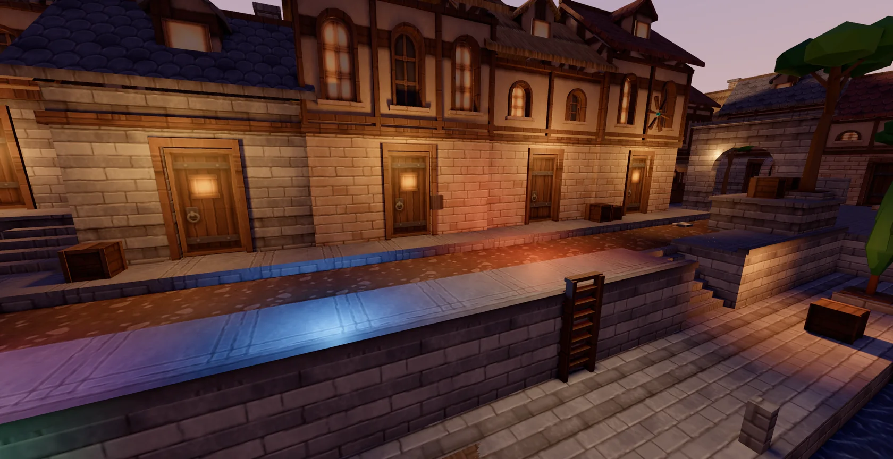
Kameran sijoittaminen
Rajaa kuva 3D-näkymässä ja paina Ctrl+Alt+0 (tai Ctrl+Alt+Num0) tai napsauta Aseta kamera 3D-näkymästä. Jos kameraa ei ole valittuna, ensimmäinen tallennettu päivitetään; jos kameraa ei ole, sellainen luodaan. Tämän voi kumota, ja tuloste- ja valaistusasetukset säilyvät. Valitse kamera kartassa, Lataa kamera kartasta ja Siirrä 3D-näkymä kameraan toimivat toiseen suuntaan. Kameran kehys 3D-näkymässä näyttää tulosteen rajat, ja Ohjaa kameraa 3D-näkymästä antaa tavallisen liikkumisen siirtää tallennettua kameraa.
Asetukset
- Kameran sijainti: X, Y, Z, kiertokulma ja kallistus.
- Tuloste ja objektiivi: Esiasetukset (Full HD, Neliö, Pystysuunta), leveys, korkeus, näytteet, Pystysuuntainen näkökenttä ja Kaukaleikkaus.
- Valaistus: Päivänvalo, Auringonlasku tai Pilvinen, tai aseta valotus, aurinko, taivaan, horisontin ja maan värit, Proseduraalinen taivas, Varjot, Ympäristön peittävyys ja Hehku.
- Syväterävyys: Ota syväterävyys käyttöön, tarkennusetäisyys, terävä alue ja sumennuksen säde. Kohdista valintaan tarkentaa kameran edessä olevan valitun objektin keskipisteeseen.
Tallenna kamera ja asetukset tallentaa lomakkeen karttaan; tallenna kartta säilyttääksesi sen levyllä.
Renderöinti
Renderöi PNG kysyy tallennuspaikan ja aloittaa progressiivisen renderöinnin, joka täyttyy esikatselussa näyte näytteeltä. Useampi näyte näyttää paremmalta mutta vie kauemmin. Peruuta renderöinti pysäyttää kirjoittamatta tiedostoa. Renderöijä käyttää editorin rasteriputkea, ei säteenseurantaa. PNG-kuvalla on peittävä tausta, eikä animaatioita renderöidä. Hyvin suuret kuvat voivat hetkeksi pysäyttää editorin.
Asetukset
Tiedosto → Asetukset (Ctrl+,) avaa asetukset. Muutokset tulevat voimaan heti ja tallentuvat. Sivupalkissa ovat Yleiskatsaus, Pelit, Näkymä, Värit, Hiiri, Näppäimistö ja Renderöijä. Yläreunan hakukenttä löytää asetuksen nimen tai kuvauksen perusteella miltä tahansa sivulta. Jokaisella muutetulla asetuksella on oma painike oletusarvon palauttamiseen, ja Palauta oletukset palauttaa nykyisen sivun.
Sivut
- Yleiskatsaus: yleiset asetukset yhdessä: Ulkoasu (Paneelin peittävyys (%), Värimaailma, Asettelu, Kieli), Muokkaus, Näkymä ja Käyttöopas.
- Pelit: peli, sen tiedostojen sijainti ja yhteistyönimesi. Peli kertoo, mitä karttamuotoa kirjoitetaan, mitkä entiteettimääritykset ladataan ja missä sen materiaalit ovat. Pelien määritykset luetaan määrityskansion
games-kansiosta (Linuxissa ja macOS:ssä~/.config/heron-brush/games, Windowsissa%LOCALAPPDATA%\heron-brush\games) ja sovelluksen vieressä olevastagames-kansiosta, johon paketit asentavat mukana tulevan määrityksen. - Näkymä: Asettelu, Värimaailma, Kieli, maailman akselit, ruudukon peittävyys, vuototarkistuksen solukoko ja kartoituksen lukitukset.
- Värit: näkymien, geometrian ja kahvojen värit.
- Hiiri: katselun, panoroinnin ja liikkumisen nopeudet ja käänteiset suunnat, lentonopeus, näkökenttä, Linkitä 2D-näkymät ja kahvojen koot.
- Näppäimistö: näppäinkartta, Heron Brush tai Blender.
- Renderöijä: realistinen varjostus, valinnan ääriviiva, valo, varjot, ympäristön peittävyys, heijastukset, hehku ja pinnat.
Kieli
Kieli tarjoaa vaihtoehdon Seuraa työpöytää sekä kaikki käännetyt kielet. Käyttöliittymä vaihtuu heti. Käyttöohje avautuu käyttöliittymän kielellä, jos siitä on käännös, ja muuten englanniksi.
Liitännäiset ja MCP
Liitännäiset
Liitännäiset laajentavat editoria Rhai-skripteillä. Tiedosto → Liitännäiset avaa Liitännäiset-ikkunan. Asenna liitännäinen asentaa .rhai-tiedoston ja Asenna liitännäiskansio asentaa kansion, jossa on main.rhai; valinnainen plugin.toml-metatieto kuvaa liitännäisen ja sen asetukset. Liitännäiset on ryhmitelty otsikoiden Aktiiviset liitännäiset ja Passiiviset liitännäiset alle, ja Ota liitännäinen käyttöön kytkee liitännäisen päälle tai pois; tämä säilyy uudelleenkäynnistyksen yli. Lataa liitännäiset uudelleen lukee skriptit levyltä uudelleen ja nollaa niiden paneelien arvot.
Aktiiviset liitännäiset näkyvät myös Kartta-välilehden Liitännäiset-osiossa asetuksineen, toimintopainikkeineen (Suorita) ja tulosteineen. Toiminto kohdistuu valintaan tai, jos mitään ei ole valittuna, kaikkeen, ja se on yksi kumousaskel. Mukana tuleva Selection inspector näyttää määriä sekä toiminnot ylös ja alas siirtämiseen.
MCP
Yhteistyö → Palvele agenttia (MCP) antaa tekoälyagentin tai muun työkalun ohjata avointa editoria Model Context Protocolin kautta. Ikkuna näyttää paikallisen osoitteen ja painikkeen Kopioi, ja Pysäytä palvelin lopettaa sen; sen ollessa käynnissä otsikkopalkissa näkyy MCP aktiivinen. Komentorivin valitsin --mcp suorittaa saman rajapinnan ilman ikkunaa. Asiakkaat voivat löytää työkaluja geometriaa, resursseja, ominaisuuksia, animaatiota, vientiä ja istuntoja varten. MCP ja editorin liitännäiset ovat eri rajapintoja.
Komentorivi
Ohjelma on heron-brush. Ilman valitsimia se avaa aloitusnäkymän.
Tiedostojen avaaminen
heron-brush map.map [entities.fgd] [materials/] avaa kartan, valinnaisesti entiteettimäärityksineen ja materiaalikansioineen. Tyhjä argumentti ohittaa yhden, esimerkiksi heron-brush map.map "" materials/. Jos editori on jo käynnissä, kartta avautuu siinä; --new-instance avaa sen sijaan erillisen ikkunan.
Komennot
--helptai-h: tulosta käyttöohje.--versiontai-V: tulosta versio.--mcp: tarjoa MCP:tä vakiosyötteen ja -tulosteen kautta ilman ikkunaa.--merge-map <base> <ours> <theirs> [<output>]:.map-tiedostojen kolmisuuntainen yhdistäminen gitiä varten. Tuloste on oletuksena ours. Ristiriidat tulostetaan, ja ne antavat nollasta poikkeavan paluukoodin.--obj-to-map <in.obj> <out.map> [size] [thickness] [snap] [material]: muunna verkko brusheiksi. Size on pisimmän sivun pituus kartan yksiköissä (oletus 256), snap on kulmien ruudukko (0, jos ei käytetä), ja sanatsolidtailayeredrakentavat ohuiden kiilojen sijaan ruudukkolaatikoita tai kuperia laattoja.--render-preview <in.map> <out.png> [size]: kirjoita kartasta PNG-pikkukuva, oletuksena 512 pikseliä.--run-script <script.rhai> <in.map> [out.map] [key=value ...]: suorita liitännäisskripti kartalle kaikki valittuna ja kirjoita tulos (oletuksena takaisin syötteeseen).key=valuevastaa liitännäisen asetuksiin.
Vianmääritys
Kun jokin näyttää väärältä
- Puuttuva materiaali: tarkista materiaalikansio tai -paketti ja viennin projektin polut.
- Väärä mallin koko: vertaa 64 yksikön pelaajamerkkiin ja vientimittakaavaan.
- Väärä liukuvärin suunta: tarkista liukuvärin kulma ja tahkon suunta.
- Tyhjä pelimoottorinäkymä: lue viennin varoitukset ja noudata kohteen tuontiohjeita.
- Live-linkki odottaa: tarkista, että lisäosa on asennettu, näkymä on liitetty eivätkä päivitykset ole keskeytettyinä.
- Vain viivoja, ei tahkoja: kytke Rautalanka pois Kartta-välilehden Näkymä-osiossa tai valitse 3D-ikkunan valikosta Materiaalit tai Kiinteä näkymä.
- Objekteja puuttuu näkymistä: Ctrl+Shift+I näyttää piilotetut objektit; tarkista kerrokset ja näkymäsuodattimet.
- Näppäin ei tee mitään: napsauta ensin näkymää, jotta sillä on näppäimistö, ja tarkista näppäinkartta kohdasta Asetukset → Näppäimistö.
- Muokkaus epäonnistui: kumoa, yksinkertaista geometriaa ja käytä Kartta-välilehden Ongelmat-osion toimintoja Tarkista kartta ja Tarkista vuodot.
- Kartta ei aukea tiedostonhallinnasta: se on ehkä annettu jo käynnissä olevalle editorille; etsi kyseinen ikkuna.
Asetukset ja varmuuskopiot
Asetukset, viimeisimmät kartat, tähdet, vientiasetukset ja liitännäiset sijaitsevat määrityskansiossa: Linuxissa ja macOS:ssä ~/.config/heron-brush ja Windowsissa %LOCALAPPDATA%\heron-brush. Automaattiset varmuuskopiot ovat kunkin kartan vieressä olevassa autosave-kansiossa.
Virheestä ilmoittaminen
Liitä mukaan editorin versio (Ohje → Tietoja), käyttöjärjestelmäsi, pieni kartta, jossa ongelma näkyy, ja tarkat vaiheet. Tulosteruutu (Ctrl+4) kertoo usein, mikä meni vikaan. Tallenna kopio ennen kokeilemista.
Tämän ohjeen käyttäminen
Valitse luku vasemmalla olevasta sisällysluettelosta. Ctrl+F näyttää sisällysluettelon ja siirtyy hakukenttään; Esc tyhjentää haun tai sulkee ohjeen, kun haku on tyhjä. Sisältö piilottaa tai näyttää lukuluettelon ja Tekstin koko muuttaa fontin kokoa; molemmat muistetaan. Yläreunan kieliluettelo vaihtaa käytettävissä olevien käännösten välillä.